A checklist for your next backtest.
10 ways a backtest lies, and the one check that catches each. Every row is a strategy I actually killed.
Which one has burned you?
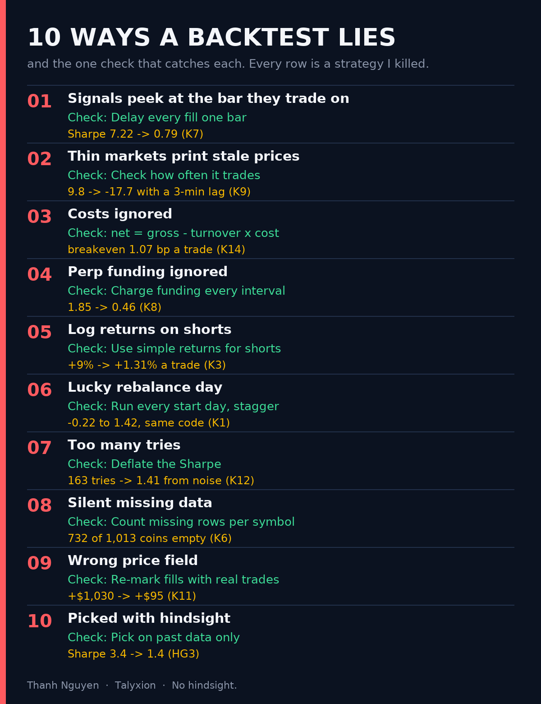
I'm Thanh Nguyen: #1 in Vietnam at WorldQuant's IQC, PhD student at Tsinghua, founder of Talyxion. I kill trading strategies for a living; the survivors become the product. Every post below keeps its original date.
X · LinkedIn · Telegram · Bluesky · Talyxion · RSS
A checklist for your next backtest.
10 ways a backtest lies, and the one check that catches each. Every row is a strategy I actually killed.
Which one has burned you?

An open problem from 1998 just moved.
Ring loading, worst-case gap of unsplit vs split routing:
2016: 1.10 (Skutella, conjectured exact)
2025: 47/42 on a sequence version (AlphaEvolve)
Today: 9/8 = 1.125, proven exactly
One Claude Code session. Full instance in image 2.
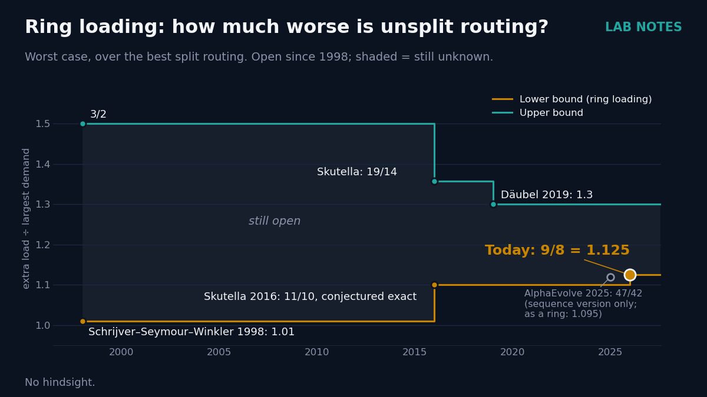
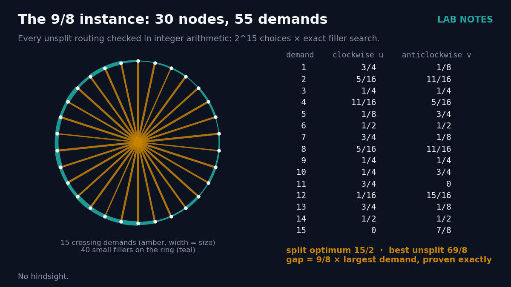
Same traders. Different question.
The leaderboard asks "who made money?" A copier has to ask "who will, picked before the fact?"
3.4 vs 1.4, on 47,220 Hyperliquid wallets.
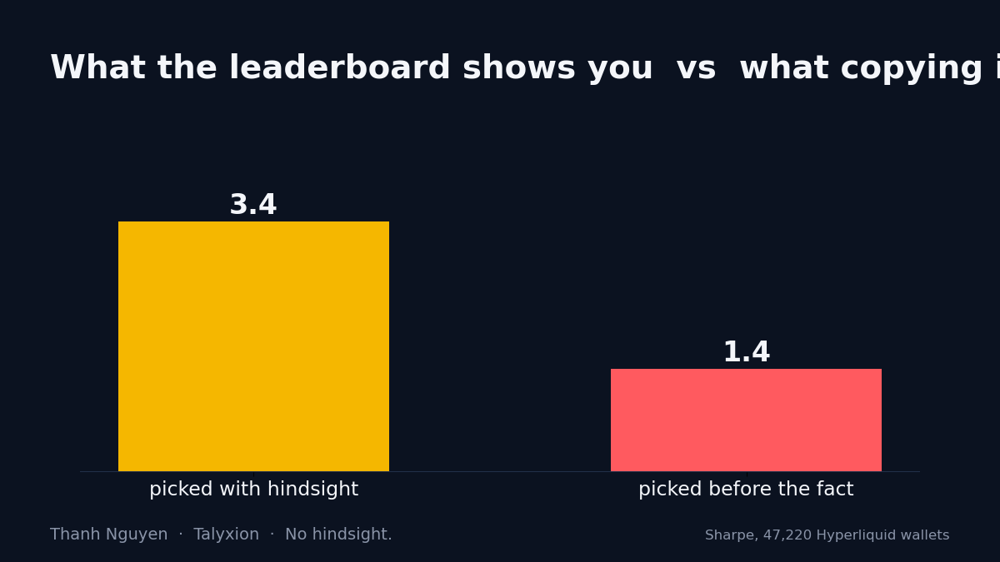
A 94% win rate sounds safe.
Our stablecoin study had one (83 events). The worst trade still lost 3.6%, and the same idea on algorithmic stablecoins once lost 75%.
Always ask: what does the worst day look like?
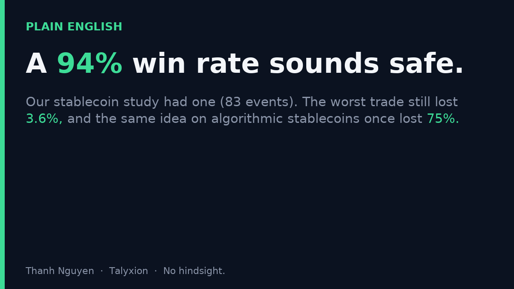
Everything I post comes from one question: would this record survive if you couldn't see the future?
Talyxion runs that check on traders and wallets before anyone copies them, then copies into your own exchange account.
Past data only; you can lose money. Link in bio.
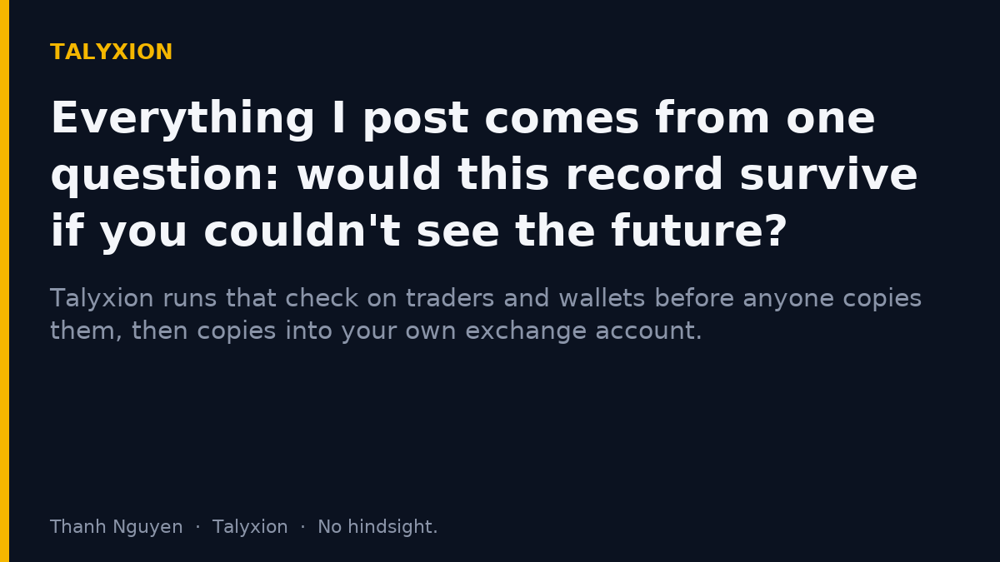
Every quant has this picture in a drawer.
Left: my best-looking signal, Sharpe 7.22. Right: the same signal with a two-bar delay, 0.79.
The gap was bid-ask bounce. The fix was one line of code.
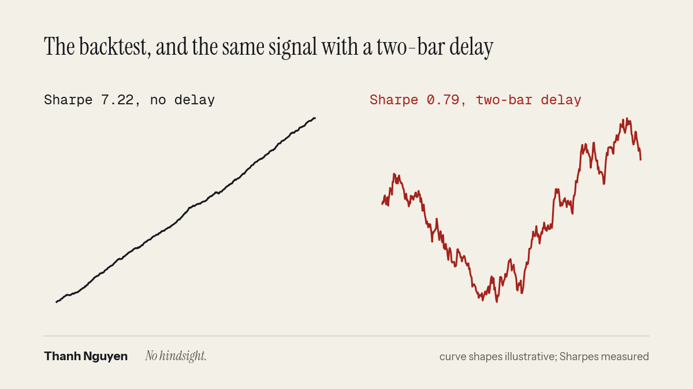
Most copy traders don't lose because their leader blows up.
They lose because the leader quietly stops trading. About 1 in 3 leaderboard accounts are gone within a year, mostly by withdrawing.
Copy several. Never one.
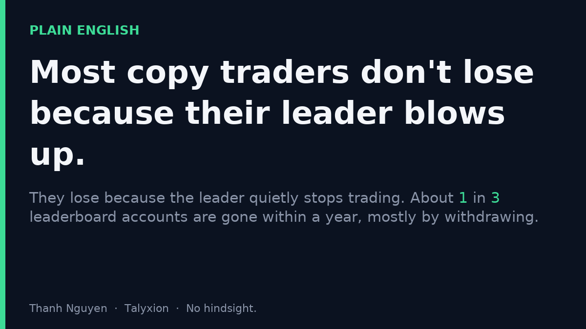
The Coinbase premium does predict Bitcoin. t = 3.0 out of sample, with a one-hour lag.
Trade it hourly and the net Sharpe is -1.0.
A real signal and a profitable trade are different objects. Turnover is the distance between them.
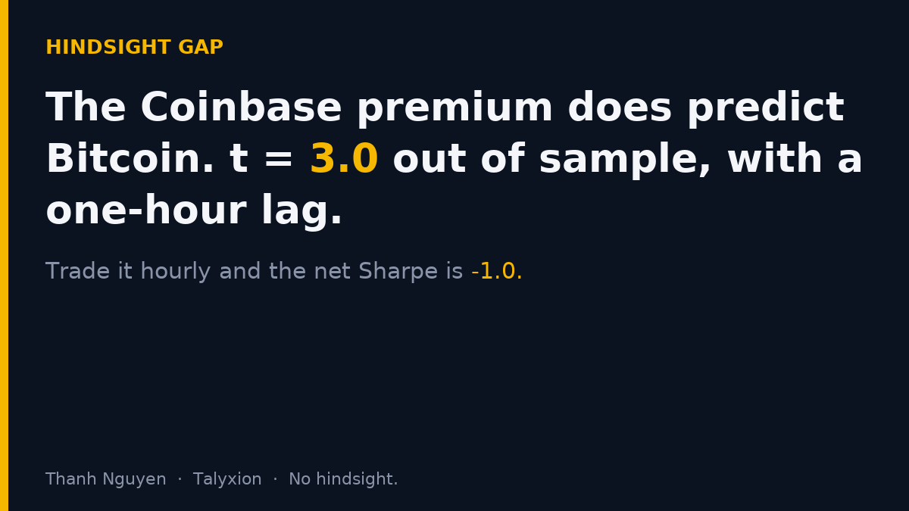
Can a "frequency" predict the future?
I tested it the way you'd test a trading signal: predictions locked with a hash before the future existed.
The target: drand, a public randomness beacon. New random bits every round, impossible to know in advance.
Before each round existed, I committed predictions from 432 Hz, 528 Hz, the Schumann resonance and a hardware-noise "receiver". 200 rounds x 256 bits.
432 Hz: 49.85%
528 Hz: 49.88%
Schumann: 50.10%
"Receiver": 50.26%
Random control: 49.95%
Coin flips. All of them.
Then lotteries, market direction and earthquakes. Lotteries: 0 jackpots. Everything that looked good in-sample vanished out of sample.
Why bother? Because this is the exact shape of most trading "edges": a story, a pretty backtest, no commitment before the data.
Commit first. Then look. That one habit kills most of the nonsense.
I test one claim like this every week. Follow for the next one.
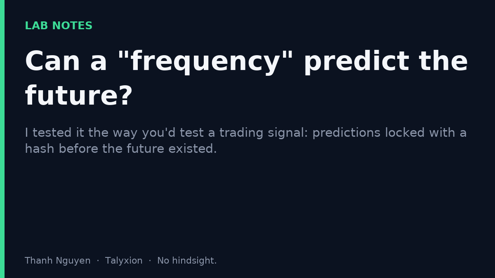
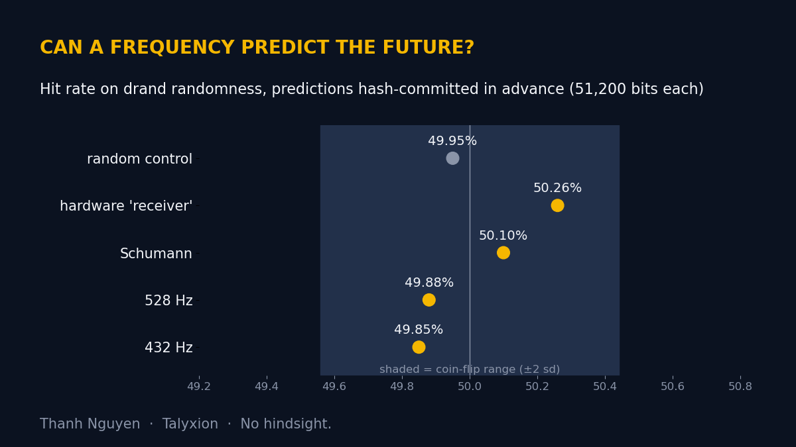
My prettiest number this month: Sharpe 3.06.
Deflated for the fact that I picked the rule on the same data I tested it on: 0.29.
Deflated Sharpe is the one ratio a leaderboard will never show you.
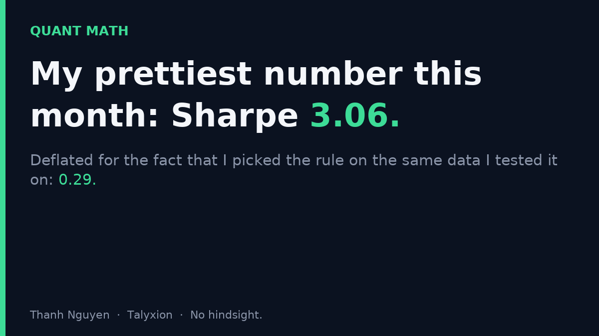
Quants: what's the dumbest bug that ever made you rich in a backtest?
Mine: log returns on a short. +9% a trade became +1.31%.
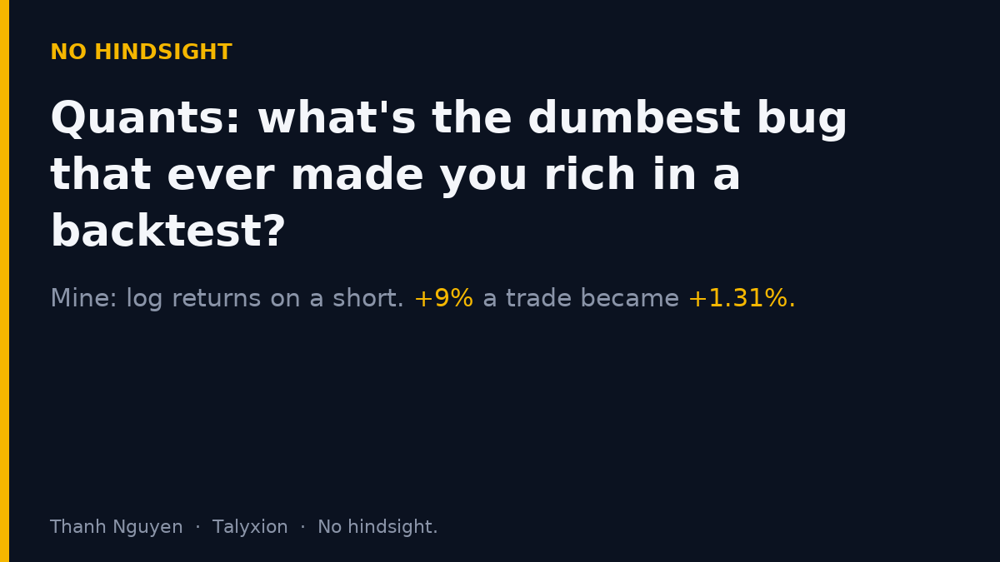
If you copy the #1 trader on a leaderboard, you're buying their past, not their future.
We checked 47,220 Hyperliquid wallets. The "best" records lose more than half their quality the moment you can't see the future: 3.4 becomes 1.4.
Pick by rules, not by rank.
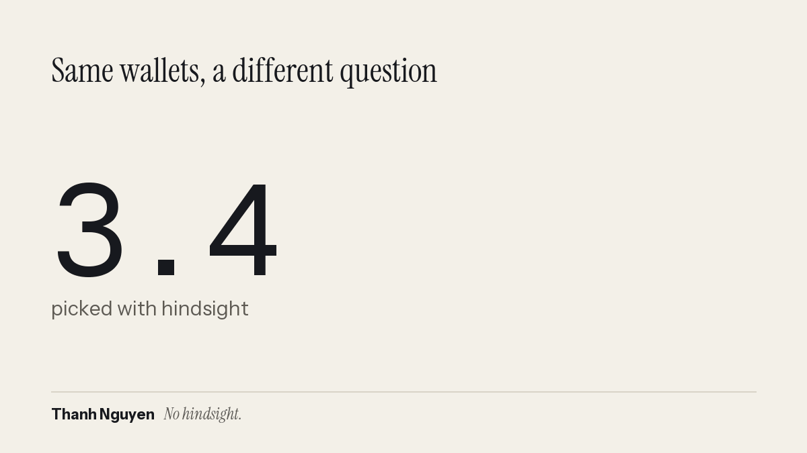
Kill Log #017: I found a 69-day cycle in Bitcoin.
Out of sample. Beat 200 shuffles. Positive 11 years out of 12.
Then I ran the one test that matters.
The pattern: days with a big move (over 2.5x trailing volatility) cluster on a 68.94-day cycle.
Apr 2023 to Nov 2026: 5.8% of cycle days were big-move days vs 2.1% otherwise. z = 3.40. 0 of 200 shuffles matched it.
No mechanism. Nothing in markets runs on 69 days. That's a red flag, not a discovery.
So I wrote the pass rule down first: extend the cycle back to 2010-2014, data the search never touched. Need z > 2.
Result: z = +0.85.
Dead.
The same data source reproduces the 2014-2026 effect, so it isn't a data problem. It was selection luck: search enough periods and one will look like a law of nature.
Lesson: when a pattern has no reason to exist, out-of-sample isn't enough. Go back in time to data the search never saw.
Kill #017. #018 lands next week. Follow so you don't miss it.
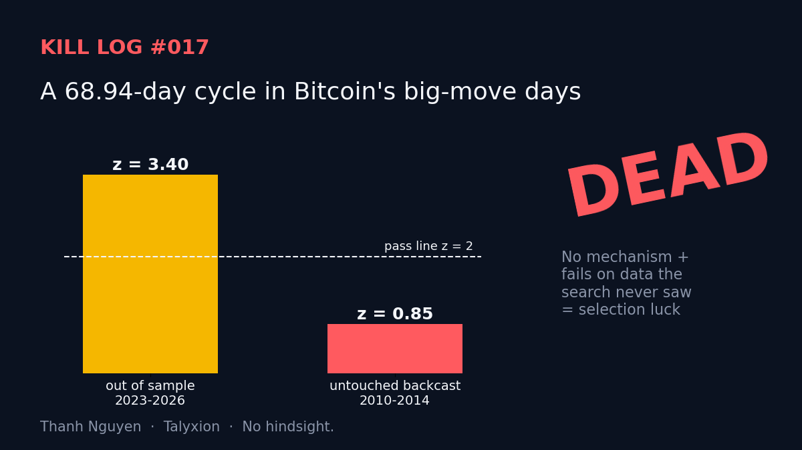
Most alpha is a timestamp bug with confidence.
I'm 25. This year I started a PhD at Tsinghua and kept running a company that 130+ traders pay for.
People ask how. The honest answer isn't time management. It's deletion.
Every project gets the test I give trading strategies: a kill rule, written down before I see the result. If it fails, it's archived. No "one more week".
This autumn that rule killed a Bitcoin cycle that had passed an out-of-sample test, a stablecoin timing signal, and an AI scheduler my own simulator loved.
What survives gets all of my attention:
→ Talyxion: copy trading judged without hindsight. $0 on ads, a team of 9, $0 raised.
→ The PhD: how to measure trading records honestly.
What opened doors for me wasn't a network. It was a record: 1st in Vietnam at WorldQuant's International Quant Championship, competing solo, out of 30,000+ entrants worldwide.
A record is a network that works while you sleep.
If you're spread across ten things: write the kill rule for each one tonight. Most of them will die. Good.
What's the last project you killed, and do you miss it?
"Tether is printing again. Pump incoming."
134 mints of $50M or more. BTC's abnormal return over the next 24 hours: +0.09%, t = 0.4.
The printer isn't a signal. It's a press release.
I found a bug in my own headline number.
It made the result better. I'm posting the correction anyway, because the method is the product.
On 2 Nov I posted: Hyperliquid wallets picked with hindsight backtest at Sharpe 3.4. Picked on past data only: 1.3.
The 1.3 was wrong.
Hyperliquid samples the all-time history of older wallets every 14 days. My screen needed two adjacent weeks of data.
So 5,446 of the longest track records silently failed the screen. No error. Just missing.
Fixed: 1.41 (was 1.26, which I rounded to 1.3). After a 5%-a-year cost haircut: 1.22 (was 1.10).
The hindsight number stays 3.4. The fixed rule still beats 100 of 100 random baskets.
Same week, I retired a much prettier number.
A rule that backtested at Sharpe 3.06. I had picked it on the same 66 weeks I tested it on. Deflated for that: 0.29.
Pretty numbers picked with hindsight are exactly what we sell against.
Two rules I now run before any result goes public:
1. Count the rows that went missing, not just the errors thrown.
2. If the rule was picked on the test data, it isn't a result. It's a story.
Leaderboards never post corrections. That's the point of doing it in public.
No hindsight.
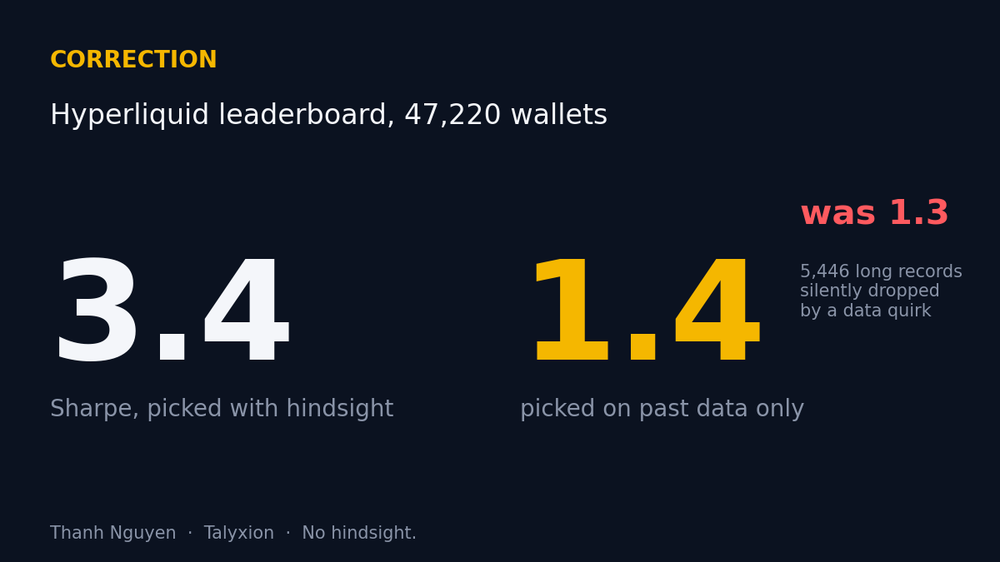
AI made trading strategies free.
It didn't make believing them any cheaper.
I found a bug in my own headline number. It made the result better. I'm posting the correction anyway.
On 2 Nov I shared that Hyperliquid wallets picked with hindsight backtest at Sharpe 3.4, and picked on past data only, at 1.3.
The 1.3 was wrong.
Hyperliquid samples the all-time history of older wallets every 14 days. My screen needed two adjacent weeks of data. So 5,446 of the longest track records silently failed. No error message. Just missing rows.
Fixed: 1.41 (was 1.26). After a 5%-a-year cost haircut: 1.22 (was 1.10). The hindsight figure stays 3.4, and the fixed rule still beats 100 of 100 random baskets.
The same week I retired a far prettier number: a rule that backtested at Sharpe 3.06. I had chosen it on the same 66 weeks I tested it on. Deflated for that, it's 0.29.
Why post a correction that flatters me, and kill a number that flattered me more?
Because the method is the product. Talyxion sells one thing: judging trading records the way you would have lived them, without hindsight. If I let hindsight into my own numbers, nothing else I say matters.
Two checks I now run before any result goes public:
→ Count the rows that went missing, not just the errors thrown.
→ If the rule was picked on the test data, it isn't a result. It's a story.
What's a public correction that ended up earning you more trust than the original?
Stablecoins rarely break. When a fiat-backed one slips below $0.99, it usually comes back.
83 events on Binance: buy at 0.99 or lower, sell at 0.998. Mean +1.05%, 94% won, worst -3.6%.
The tail lives elsewhere: algorithmic stables. UST: -75%.
Win rate is the horoscope of trading.